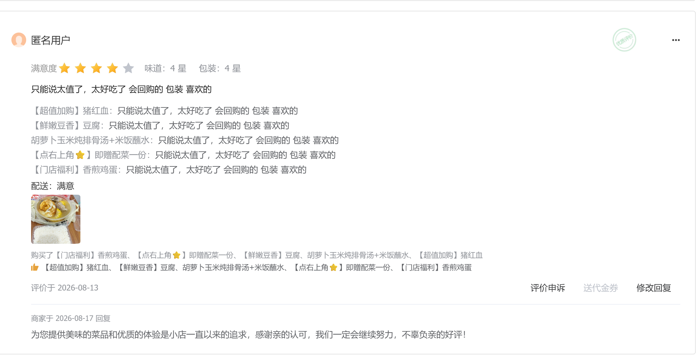
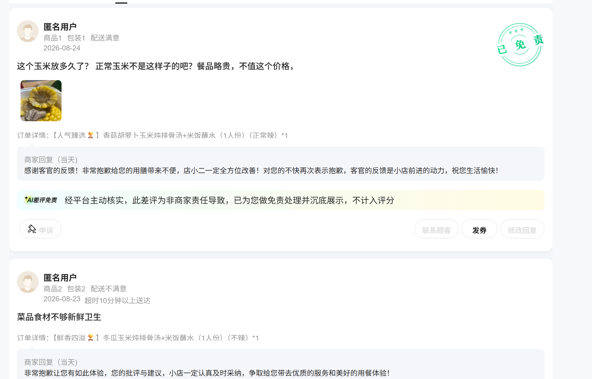

评价运营与口碑管理 · 三平台实录
佚名 ｜ 2026-10-14（v2：按 Eva 批注补充「用户运营评估口径」一节）｜ 数据与截图来源：美团/淘宝/京东商家后台（本人操作与导出）｜ 对应岗位：产品运营（用户运营方向）
评价响应 SOP差评归因五类法平台申诉治理
三平台 84+59+ 条评价维护全部截图可核验
先答一个问题：用户运营的评估口径是什么
一句话口径：用户运营做得好不好，不看做了多少动作，看「用户有没有被持续经营好」。我把它拆成三层可核验的口子——动作（建群、发券、搞活动）是手段，可以摆样子；响应率、评分、老客占比是结果，摆不了。评估用户运营，我认结果口径。
| 口径层 | 指标 | 本期实测值 | 来源 |
|---|
| 关系层（用户有没有被回应） | 差评当天响应率 / 好评当天回复率 | 差评当天响应（全部可查差评）；好评当天逐条回复 | 本人操作记录 |
| 口碑层（用户用评分投票的结果） | 三平台店铺评分 / 京东好评率 | 京东 4.37 / 美团 4.5 / 淘宝 4.56；好评率 83.1%（59 条） | 三平台后台 |
| 结构层（用户是不是留下来了） | 老客下单占比（顾客分层） | 京东 40.7% / 美团 39.6% / 淘宝 34.3% | 后台顾客分层字段 |
我做的评价运营体系：四个模块
① 好评维护——每一条好评当天回复（个性化措辞，不用统一模板），维持互动与老客关系。
依据：评价回复窗口 14 天（美团平台规则）；回复内容 3 次内可修改。
② 差评响应（SOP）——差评逐条回复、时效为当天：先致歉 + 对具体问题给解释 + 给改进承诺；不能让差评在无人回应状态下挂着。
③ 差评归因与改进闭环——按「食安 / 缺料分量 / 口味 / 价格 / 配送」五类逐条归类，跨平台汇总，同一类问题连续出现即触发改动作（食材存储、出餐检查、配菜标准化）。
④ 平台治理与申诉——善用平台规则：无理差评申诉（美团申诉不限次；淘宝「内容无意义评价」类申诉），以及平台主动「差评免责」机制的使用。
数据结果
4.37 / 4.5 / 4.56
三平台评分（京东 / 美团 / 淘宝）
口径说明：美团为本期「商家综合体验分」4.5（商品质量分 4.5 × 80% + 服务体验分 × 20%，2026-10 后台数据）；京东为 59 条评价综合分与好评率；淘宝为计入总分评价的均分。三平台口径不同，分开列示不混算。
方法论沉淀：差评响应 SOP 与归因法
差评响应时间轴（对齐行业通行做法）
第一时间——发现差评即公开回复（表态 + 具体化，不用模板话术；平台政策：回复窗口 14 天、可修改 3 次）
当天——完成归因归类，判断平台责任 / 商家责任 / 顾客误解，分别走：申诉 / 改动作 / 补充解释
同类 ≥ 2-3 条——触发系统性改进（食材存储、出餐检查、包装密封），而不是一条一条救火
差评归因五类法（跨平台统一口径）
| 类别 | 实际案例（京东 1 星） | 对应改进动作 |
|---|
| 食安 | 异物（头发×2）、莲藕变质 | 出餐检查清单 + 夏季食材存储与效期加密（零容忍项） |
| 缺料 / 分量 | 「山药呢？分量怎么这么少」 | 配菜标准化复核 |
| 口味 | 「排骨味道怪怪的」「还需再提升」 | 口味反馈记录、出餐口味抽查 |
| 价格感知 | 「餐品略贵，不值这个价格」 | 活动结构复核（与平台活动联动的性价比呈现） |
| 配送 | 「超时 10 分钟以上」 | 与平台时效机制联动（该单经平台判责后免责） |
治理案例：一条 2 星差评的完整处理（淘宝）
发现——差评「浓浓的鸡精味」（2 星，味道 2 星/包装 4 星）。判断：本方汤品为现炖无鸡精，属「内容与事实不符、对他人无参考意义」类。
17:40 提交申诉——申诉类型选「内容无意义评价」，附理由说明「我们都没用鸡精，哪里来的鸡精」。
18:18 平台评审通过——差评评分删除、评价不展示于评分体系。从提交到出结果 38 分钟。
学习点：差评治理不是「求顾客删」——用足平台规则（申诉类型选择、证据表述）是更高杠杆的动作；同时把「求解申诉」和「改进真实问题」分开处理：前者治理规则，后者治理生意。
截图证据（全部可核验）

淘宝：2 星差评申诉成功（17:40 提交 → 18:18 评审通过）

美团：差评当天回复 + 平台 AI 免责记录